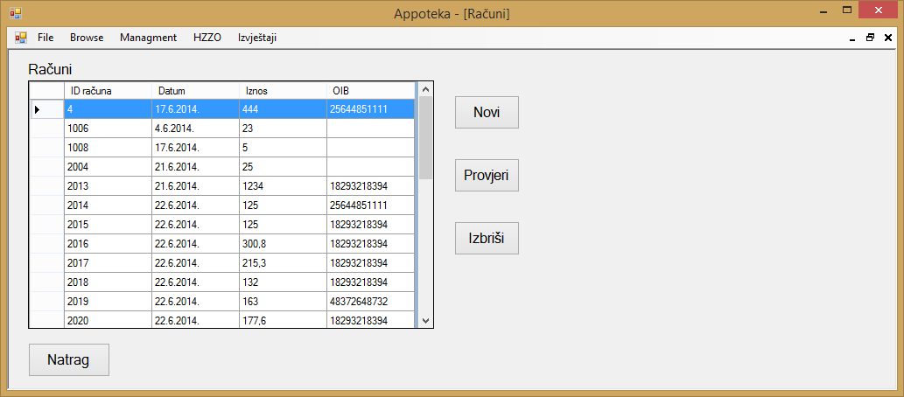

Klikom na gumb "Browse" u glavnom meniju otvara se izbor od tri stavke, to su "Lijekovi", "Narudžbe" i "Računi". Klikom na gumb "Računi" otvara se prozor u kojemu se nalazi popis svih računa koji su trenutno uneseni u aplikaciju te su prikazani svi relevantni podaci o tim istim računima.

Ako korisnik želi napraviti novi račun, to može klikom na gumb "Novi" pri čemu se otvara novi prozor u kojemu korisnik aplikacije može unijeti podatke o novom računu.
Klikom na gumb "Dodaj" otvara se novi prozor u kojemu se dodaju lijekovi koje korisnik aplikacije želi izdati računom. U tom prozoru vidljiv je sav popis lijekova u aplikaciji te podaci o tim lijekovima.
Željeni lijekovi mogu se dodati na način da se označe i klikom na gumb "Dodaj". Nakon što je korisnik dodao sve željene artikle klikom na gumb "Završi" isti artikli će se naći u tablici novog računa. Klikom na gumb "Odustani" postupak dodavanja artikala na račun se poništava.
Nakon što su željeni artikli uspješno dodani u novi račun, potrebno je odrediti količinu lijekova koju izdajemo. Nakon što smo odredili količinu pojedinih lijekova, klikom na gumb "Osvježi" izračunavaju se iznosi pojedinog lijeka koji su jednaki umnošku cijene i količine, te ukupan iznos koji je jednak sumi svih iznosa.
Klikom na gumb "Izdaj" korisnik dodaje novi račun u aplikaciju, aplikacija javlja poruku kako je novi račun uspješno dodan te nudi mogućnost ispisa računa.
Klikom na gumb "Izlaz" poništava se dodavanje novog računa.
Ako korisnik želi provjeriti određeni račun, to može učiniti na način da označi željeni račun i klikne na gumb "Provjeri", klikom na gumb "Provjeri" otvara se novi prozor u kojemu su prikazani podaci o odabranom računu. Klikom na gumb "Natrag" aplikacija korisnika vraća u prozor sa popisom računa.
Ako korisnik želi obrisati određeni račun to može učiniti na način da odabere račun koji želi obrisati i klikne na gumb "Izbriši". Klikom na gumb "Izbriši" aplikacija prikazuje poruku kako bi korisnik mogao potvrditi svoj odabir. Klikom na gumb "Yes", označeni račun se briše, dok se klikom na gumb "No" postupak brisanja računa poništava.

Klikom na gumb "Natrag" aplikacija korisnika vraća na početni zaslon aplikacije.